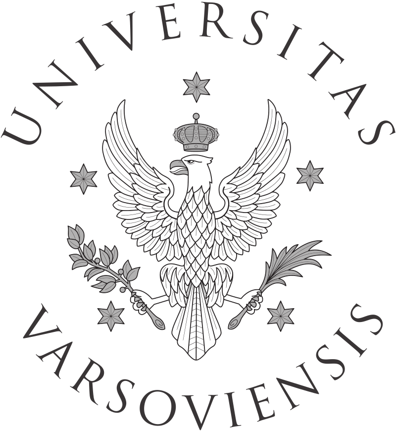

2024-01-15 – 2024-01-23
Protein Folding and Conformational Diseases
Institute of Biotechnology and Biomedicine · Universitat Autònoma de Barcelona · Barcelona · Spain
Barcelona, Spain
2024-01-15 – 2024-01-23
Institute of Biotechnology and Biomedicine · Universitat Autònoma de Barcelona · Barcelona · Spain
Barcelona, Spain2023-05-13 – 2023-05-27
Institute of Biotechnology and Biomedicine · Universitat Autònoma de Barcelona · Barcelona · Spain
Barcelona, Spain2023-01-16 – 2023-01-23
Institute of Biotechnology and Biomedicine · Universitat Autònoma de Barcelona · Barcelona · Spain
Barcelona, Spain2022-12-05 – 2022-12-24
Institute of Biotechnology · Vilnius University · Vilnius · Lithuania
Vilnius, Lithuania2021-11-01 – 2021-12-26
Institute of Biotechnology · Brandenburg University of Technology Cottbus-Senftenberg · Senftenberg · Germany
Senftenberg, Germany2020-10-01 – 2021-09-30
Institute of Biotechnology · Brandenburg University of Technology Cottbus-Senftenberg · Senftenberg · Germany
Senftenberg, Germany2020-03-01 – 2020-05-29
Institute of Biotechnology · Brandenburg University of Technology Cottbus-Senftenberg · Senftenberg · Germany
Senftenberg, Germany2019-07-01 – 2019-07-15
Faculty of Mathematics and Information Science · Warsaw University of Technology · Warsaw · Poland
Warsaw, Poland2019-07-01 – 2019-12-16
Institute of Biotechnology · Brandenburg University of Technology Cottbus-Senftenberg · Senftenberg · Germany
Senftenberg, Germany2019-04-15 – 2019-05-31
Institute of Biotechnology · Brandenburg University of Technology Cottbus-Senftenberg · Senftenberg · Germany
Senftenberg, Germany2019-02-04 – 2019-02-15
Institute of Biotechnology · Brandenburg University of Technology Cottbus-Senftenberg · Senftenberg · Germany
Senftenberg, Germany2018-11-02 – 2018-11-09
Institute of Biotechnology · Vilnius University · Vilnius · Lithuania
Vilnius, Lithuania2018-04-01 – 2018-09-30
Institute of Biotechnology · Brandenburg University of Technology Cottbus-Senftenberg · Senftenberg · Germany
Senftenberg, Germany2018-01-07 – 2018-01-26
Institute of Biotechnology · Vilnius University · Vilnius · Lithuania
Vilnius, Lithuania2024-03-01 – ongoing
Bioinformatics and Multiomics Analysis Laboratory · Clinical Research Centre · Medical University of Białystok
Białystok, Poland2023-01-09 – 2024-03-01
Metabolomics Laboratory · Clinical Research Centre · Medical University of Białystok
Białystok, Poland2017-10-01 – 2023-07-06
Department of Bioinformatics and Genomics · Faculty of Biotechnology · University of Wrocław
Wrocław, Poland
2013-10-01 – 2015-08-13
Laboratory of Environmental Pollution Analysis · Faculty of Biology · University of Warsaw
Warsaw, Poland2012-10-01 – 2013-09-06
Department of Stem Cell Bioengineering · Mossakowski Medical Research Centre PAS · University of Warsaw
Warsaw, PolandExchange studies, German Academic Exchange Service scholarship, Biotechnology
2020-10-01 – 2021-09-30 · Senftenberg, Germany
BioTechNan - Program of Interdisciplinary Environmental PhD Studies KNOW in the area of Biotechnology and Nanotechnology
Thesis: Bioinformatic and experimental analyses of bacterial functional amyloids CsgA and CsgB
2018-10-01 – 2023-07-06 · Wrocław, Poland
Molecular Biology
2017-10-01 – 2018-09-30 · Wrocław, Poland
Biotechnology, specialization in Molecular Biology
Thesis: Disposal of hardly biodegradable feedstock wastes in methane fermentation process
2013-10-01 – 2015-08-13 · Warsaw, Poland
Biotechnology
Thesis: Localization of hSUV3 protein and γ-tubulin at different developmental stages of the human umbilical cord blood-derived neural stem cell line (HUCB-NSC)
2010-10-01 – 2013-09-06 · Warsaw, Poland
21 conference and training events
2026-02-17 – 2026-02-20
Introduction to Machine learning for Non-globular proteins
2025-09-15 – 2025-09-17
Aggregating amyloid resources: comprehensive list of amyloid-like aggregation databases
2025-06-22 – 2025-06-26
imputomics evolved: expanding imputation methods and redesigning benchmarks for missing data imputation
2025-05-20 – 2025-05-23
Aggregating amyloid resources
2024-10-20 – 2024-10-24
imputomics 2.0: bridging data gaps in proteomics with missing value imputation algorithms and their benchmark
2024-09-11 – 2024-09-13
imputomics 2.0: comprehensive R package for missing data imputation in proteomics data
2024-05-14 – 2024-05-17
imputomics 2.0: comprehensive R package for missing data imputation in proteomics data
2023-10-17 – 2023-10-19
Imputomics: comprehensive R package for missing data imputation in metabolomics data
2023-01-27 – 2023-01-28
Imputomics: imputation of missing values for ‘omics’ dat
2020-10-28 – 2020-10-29
countfitteR: count data analysis for precision medicine
2020-09-24 – 2020-09-27
Count data analysis with countfitteR
2020-03-08 – 2020-03-11
AmpGram – a novel tool for prediction of antimicrobial peptides
2019-09-26 – 2019-09-29
AmyloGram: the R package and a Shiny server for amyloid prediction
2019-05-17 – 2019-05-18
AmyloGram: prediction of amyloid sequences in R
2019-03-24 – 2019-03-28
AmyloGram: prediction of amyloid sequences in R
2019-03-17 – 2019-03-19
Co-evolution of curli components CsgA and CsgB
2018-12-14 – 2018-12-17
AmyloGram: prediction of amyloid sequences in R
2018-10-07 – 2018-10-11
CsgA, CsgB and CsgC - evolutionary Interplay in curli biogenesis
2018-09-05 – 2018-09-07
PhyMet2: a database and toolkit for phylogenetic and metabolic analyses of methanogens
2018-05-23 – 2018-05-25
PhyMet2: database and algorithm predicting culturing conditions of methanogens
2018-04-15 – 2018-04-18
PhyMet2: complex database containing records on methanogens with unique feature (MethanoGram) allowing prediction of culture conditions based on 16S rRNA
13 publications listed · most recent first
Aleksandra A. Kalitnik, Anna Lassota, Oliwia Polańska, Marlena Gąsior‐Głogowska, Monika Szefczyk, Agnieszka Barbach, Jarosław Chilimoniuk, Izabela Jęśkowiak, Alicja W. Wojciechowska, Jakub Wiktor Wojciechowski, Natalia Szulc, Małgorzata Kotulska, Michał Jan Burdukiewicz
Authorship: coauthor
https://doi.org/10.1002/pro.70151Patrycja Mojsak, Paulina Samczuk, Michał Jan Burdukiewicz, Jarosław Chilimoniuk, Krystyna Grzesiak, Karolina Pietrowska, Anna Niemcunowicz‐Janica, Adam Jacek Kretowski, Michał Ciborowski, Michał Szeremeta
Authorship: coauthor
https://doi.org/10.3389/fmolb.2024.1400622Valentín Iglesias, Jarosław Chilimoniuk, Carlos Pintado‐Grima, Oriol Bárcenas, Salvador Ventura, Michał Jan Burdukiewicz
Authorship: first
https://doi.org/10.1016/j.csbj.2024.10.047Michał Jan Burdukiewicz, Jarosław Chilimoniuk, Krystyna Grzesiak, Adam Jacek Kretowski, Michał Ciborowski
Authorship: coauthor
https://doi.org/10.1016/j.trac.2024.117819Jarosław Chilimoniuk, Anna Erol, Stefan Rödiger, Michał Jan Burdukiewicz
Authorship: first
https://doi.org/10.1016/j.csbj.2024.04.061Jarosław Chilimoniuk, Krystyna Grzesiak, Jakub Kała, Dominik Nowakowski, Adam Jacek Kretowski, Rafał Kolenda, Michał Ciborowski, Michał Jan Burdukiewicz
Authorship: first
https://doi.org/10.1093/bioinformatics/btae098Michał Jan Burdukiewicz, Dominik Rafacz, Agnieszka Barbach, Laura Bąkała, Anna Lassota, Jakub Stecko, Natalia Szymańska, Natalia Szymańska, Natalia Szymańska, Jakub Wiktor Wojciechowski, Dominika Kozakiewicz, Natalia Szulc, Jarosław Chilimoniuk, Izabela Jęśkowiak, Marlena Gąsior‐Głogowska, Małgorzata Kotulska
Authorship: coauthor
https://doi.org/10.1093/nar/gkac882Rafał Kolenda, Jarosław Chilimoniuk, Krzysztof Grzymajło, Stefan Rödiger, Aamir Ali, Veronika L Tchesnokova, Dirk Roggenbuck, Peter Schierack
Authorship: coauthor
https://doi.org/10.1128/aem.02279-21Natalia Szulc, Michał Jan Burdukiewicz, Marlena Gąsior‐Głogowska, Jakub Wiktor Wojciechowski, Jarosław Chilimoniuk, Paweł Mackiewicz, Tomas Šneideris, Vytautas Smirnovas, Małgorzata Kotulska
Authorship: coauthor
https://doi.org/10.1038/s41598-021-86530-6Jarosław Chilimoniuk, Alicja Gosiewska, Jadwiga Słowik, Romano Weiss, Peter Markus Deckert, Stefan Rödiger, Michał Jan Burdukiewicz
Authorship: first
https://doi.org/10.21037/atm-20-6363Michał Jan Burdukiewicz, Katarzyna Sidorczuk, Dominik Rafacz, Filip Pietluch, Jarosław Chilimoniuk, Stefan Rödiger, Przemysław Gagat
Authorship: coauthor
https://doi.org/10.3390/ijms21124310Michał Jan Burdukiewicz, Piotr Sobczyk, Jarosław Chilimoniuk, Przemysław Gagat, Paweł Mackiewicz
Authorship: coauthor
https://doi.org/10.3390/ijms19123709Michał Jan Burdukiewicz, Przemysław Gagat, Sławomir Jan Jabłoński, Jarosław Chilimoniuk, Michał Gaworski, Paweł Mackiewicz, Marcin Łukaszewicz
Authorship: coauthor
https://doi.org/10.1111/1758-2229.12648 Barcelona, Spain
Barcelona, Spain
 Vilnius, Lithuania
Vilnius, Lithuania
 Senftenberg, Germany
Senftenberg, Germany
 Warsaw, Poland
Warsaw, Poland
 Prague, Czech Republic
Prague, Czech Republic
 Thessaloniki, Greece
Thessaloniki, Greece
 Washington DC, USA
Washington DC, USA